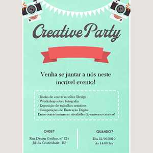
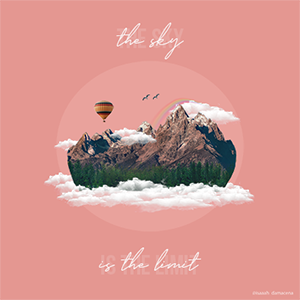
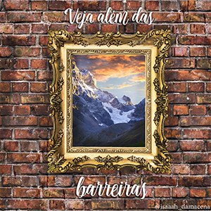
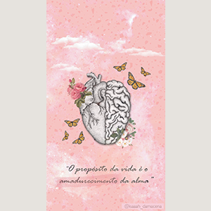
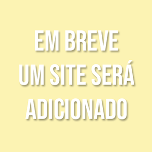
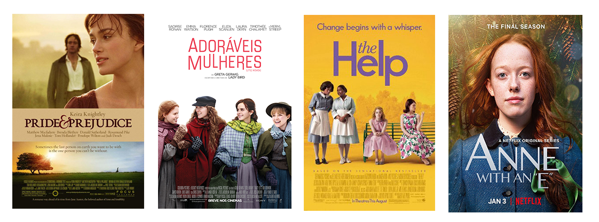
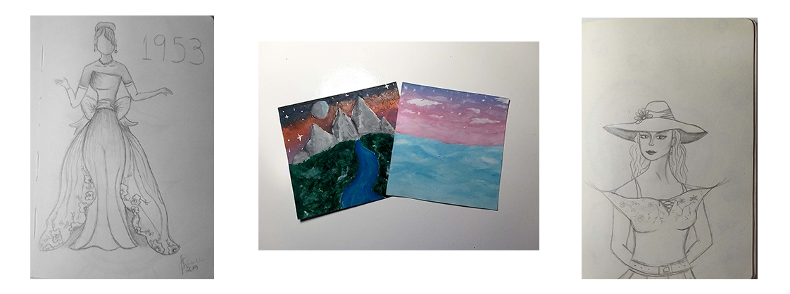
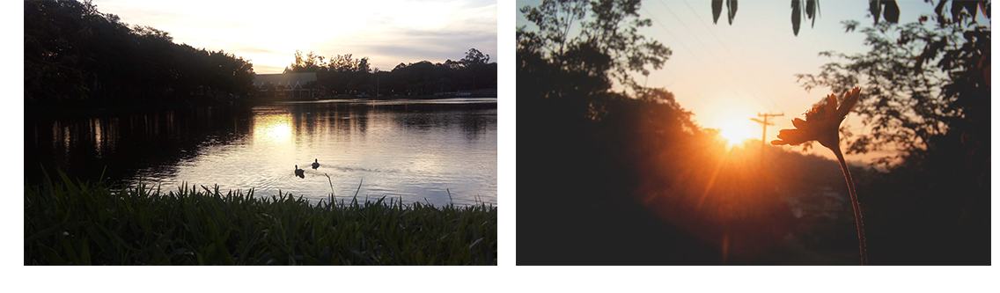
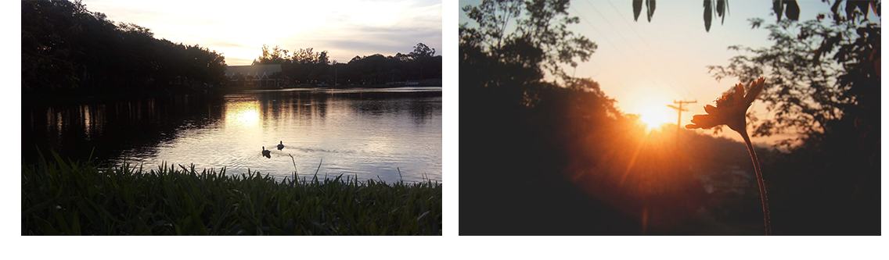

Sobre Mim
Olá, sou a Isabelle! Nasci em 2004 na cidade de Santo André- Grande ABC Paulista, mas resido em Ribeirão Pires. Sou estudante da ETEC Maria Cristina Medeiros, onde curso o ensino médio e também o ensino técnico de Informática para internet. Amo o mundo artístico e estou sempre em busca de novos aprendizados.
Habilidades

Design Gráfico
Após realizar um curso técnico de Design Gráfico, aprendi a manusear os seguintes programas: Adobe Photoshop, Adobe Illustrator, Adobe InDesign e CorelDraw. Os programas que domino são o Adobe Photoshop e o Adobe Illustrator. Realizo alguns trabalhos como: flyers, post para social media, lembrancinhas, edição de imagens, entre outros serviços.
Música
Eu desenvolvi o gosto pela música desde criança, cantava para a família nas reuniões que tínhamos. Hoje, procuro sempre informações que me auxiliem a aumentar o meu potencial vocal. Aprecio muito essa arte!

Desenho
Desde muito pequena já gostava de fazer arte com um lápis. Ainda não sou uma profissional da área, mas estou sempre me aperfeiçoando e dando o meu melhor. Os meus melhores desenhos são os de moda, principalmente dos séculos XIX e XX.

Escrita
Expresso as minhas emoções através dos poemas e poesias que faço. Tenho muita facilidade em desenvolver textos dissertativos argumentativos e a organizar as ideias no papel.
Minhas principais Competências Socioemocionais
Veja aqui quais são todas as competências pela BNCC
Abertura ao Novo

Quando há desafios, eu persisto até superá-los. Estou sempre em busca de novas aventuras no mundo do conhecimento, aprender nunca é demais! O “novo” nos revigora e nos permite inovar cada vez mais através das nossas ideias.
Amabilidade

Prezo pelo bem-estar de todos que estão a minha volta. Sou uma pessoa muito afetuosa e que está sempre pronta para ajudar o próximo. Acredito que através da empatia e do respeito, construímos relacionamentos muito mais saudáveis e proveitosos.
Autogestão

Planejo todas as minhas metas e objetivos, para que eu consiga superar os obstáculos que aparecem ao longo do caminho. Me dedico muito ao meu desenvolvimento no mercado de trabalho, pois penso no meu futuro profissional.
Alguns dos meus trabalhos
Social Media
Convite para eventos
Montagem
Montagem
Wallpaper Mobile
Site
Os meus hobbies!
Filmes e séries
Sou apaixonada por filmes (e algumas séries) que se passam em outra época e que principalmente tenham uma mensagem relevante para minha vida. Filmes de drama nos ensinam muito, a maioria são obras atemporais. Mesmo que a história ocorra há alguns séculos atrás, ainda possui o poder de representar a nossa sociedade atual. Estes são alguns dos meus favoritos.
Desenhos e pinturas
O ato de desenhar nos permite expressar os nossos sentimentos. A criatividade é uma terapia gratuita!
Fotografia
Não sou uma profissional, mas amo dar uns clicks por aí. Acredito que a fotografia tem uma função muito importante, ela pode registrar um momento. Ela não nos deixa esquecer daqueles momentos tão especiais. Com ela é possível ‘’congelar’’ aquilo que os nossos olhos veem, como: um nascer do Sol, um casamento, a alegria de algum bichinho, um sorriso. Enfim, a fotografia é incrível!
 

Poemas e poesias
Escrever, assim como desenhar, é uma forma de expressão. Escrevo sobre minha família, sobre a minha crença, sobre o amor e sobre as paisagens que tenho o privilégio de observar. Estes são alguns dos meus poemas.

Certificados
Para me contratar
Estes são os meios para contato